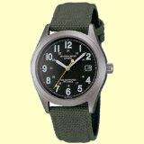
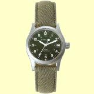
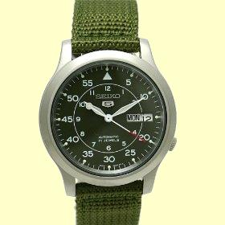

私のお気に入り
腕時計 セイコー 5 SNK805K2
腕時計で魚が釣れれば世話は無いのであるが......
長年使ってきた、アルバの腕時計の防水機能が弱くなり、腕を流れに浸けるたびに、文字盤の中に水滴が付くようになってしまった。そこで、新しい腕時計を新調しようとインターネットでいろいろ物色していると、この時計が目に付いた。
他にも候補はあり、カシオのオーバーランド OV-100B-3AJF（ソーラー充電）、ハミルトンのカーキ（手巻き）H69319363 などが挙がっていた。しかし、カシオのソーラータイプの腕時計は充電池の寿命がやや短いこと、ハミルトンは価格が高いこと（笑）がネックとなり、購入に二の足を踏んでいた。


今時珍しい自動巻で、海外からの逆輸入モデルであったが、価格が手頃だったので、思い切って購入した。宅急便で届いた包みを開けてこの時計を手にすると、機械式時計のずっしりとした重量感が伝わってきた。

使ってみて良い点は、
○自動巻なので、電池交換の手間と費用が不要。毎日手で巻く必要もない
○文字盤が大きくて見やすい、文字盤の色も落ち着いていて綺麗
○曜日、日付のカレンダーが付いていて便利
○文字盤のガラスがフラットで、傷が付きにくい
○ベルトがしっかり作ってあり、穴の部分が皮で補強してある
○余分なベルトを挟んでおく金具が二つ付いていて便利
○文字盤とベルトの色がマッチしており高級感がある
○価格が手頃である（実売価格 アマゾンで 7,090円だった）
心配な点は、日常生活防水となっているが、釣りの場面においてどのくらい防水が効くかというところだけである。
こう書いてきて思い出した。1999から2000年頃はオークランドでホームステイをしていたのだが、当時ホストの一家が購読していたニュージーランドヘラルド紙に、定期的にセイコーの自動巻腕時計の広告が載っていた。シンプルなモデルで男性用と女性用と両方が売られていたが、確か 99NZ$ ほどではなかったかと思う。日本円にして約6,500円である。
とても気に入ったので、末永く愛用したい品である。
（各画像はアマゾンから引用・加工しました）
私のお気に入り 目次へ
サイトマップ
ホームへ
お問い合わせ